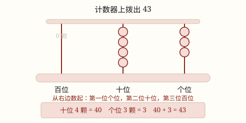

100 以内数的组成与数位
一个两位数是几个十和几个一合起来的；个位、十位、百位各有各的位置，满十就向高位搬家。
| 所属主题 | 数的意义和性质 |
|---|---|
| 所属模块 | 数与代数 |
| 课标学段 | 第一学段（1~2年级） |
| 核心素养 | 数感符号意识 |
教材定位
人民教育出版社《2024年版》
对应一下第 3 单元「100 以内数的认识」：数数、数的组成、数的顺序、读数写数、几十几的组成。
课标要求
| 数与代数·数与运算 | 在实际情境中感悟并理解万以内数的意义，理解数位的含义，知道用算盘可以表示多位数（例1）。 印刷第 18 页 行为动词：理解 |
|---|---|
| 数与代数·数与运算 | 了解符号＜，＝，＞的含义，会比较万以内数的大小；通过数的大小比较，感悟相等和不等关系（例2）。 印刷第 18 页 行为动词：了解 |
说明
数 100 以内的数，一根一根数太慢。我们先 10 根捆成一捆：1 捆是 1 个十，2 捆是 2 个十……捆着数，又快又不容易乱。
一个两位数，就是几个十和几个一合起来的。43 里面有 4 个十和 3 个一；4 个十是 40，40 + 3 = 43。这就叫数的组成。
数位是每个数字的「住址」。从右边起：第一位是个位，住几个一；第二位是十位，住几个十；第三位是百位，住几个百。写 43 时，4 住在十位、3 住在个位，两个数字换个位置，数就完全变了。
10 个十捆成一大捆，就是 1 个百。所以 100 的百位是 1，十位和个位都是 0——两个 0 一个都不能少，它们在替空位站岗。
使用场景
数教室里的东西：数作业本、数椅子，先数出 10 本放一摞，再一摞一摞地数。6 摞加 2 本，一眼读出 62。
看商品包装：铅笔 10 支装一盒。买 3 盒零 7 支，不用说「三十七支」，看组成就知道：3 个十加 7 个一。
报跳绳成绩：跳了 25 下，就是 2 个十和 5 个一，读作「二十五」。会说组成，读数就不会颠三倒四。
比较两个数的大小：比 43 和 38，先看十位：4 个十比 3 个十大，所以 43 大。会拆组成，比大小就有了顺序。
注意点
写一百别丢 0。一百要写 100，一共三个数字。写成「10」就变成十了。0 不是没有用，它在占位置。
「几十几」别隔开写。三十七是 3 个十和 7 个一，写成「307」就错了——那变成了 3 个百。一个位置只能站一个数字，要紧挨着写：37。
数位从右边数起。个位永远是右边第一位。有的同学从左边数起，把十位当个位，43 里十位的 4 和个位的 3 就会认反。写数、读数前，先从右边点一位。
读数写数都从高位起。先看十位是几个十，再看个位是几个一：45 读「四十五」，先说四十再说五，顺序不乱。
为什么是这样

图 1：同样的珠子，穿在十位上表示十，穿在个位上表示一——位置决定它代表多少
算理推导
数出 43 根小棒：每数满 10 根捆成一捆。最后捆出 4 捆，剩 3 根散的。所以 43 = 4 个十 + 3 个一。
在计数器上拨 43：十位拨 4 颗珠，个位拨 3 颗珠。同一颗珠子，穿在个位表示 1 个一，穿在十位表示 1 个十——珠子一模一样，位置让它代表的数不一样。
合起来读：十位 4 颗是 40，个位 3 颗是 3，40 + 3 = 43。写数就是把「4 个十」记在十位、「3 个一」记在个位，写出来正是 43。
接着数到 100：10 捆小棒合成一大捆。计数器上，十位的珠子拨满 10 颗，就全部退掉，向百位进 1 颗。这就是满十进一：10 个一变成 1 个十，10 个十变成 1 个百。
动手实验
抓一把小棒或吸管（五六十根左右）。先估一估有多少，再 10 根一捆地数清楚。数完说一说：几个十？几个一？合起来是几？和你估的差多少？换一把再玩一次，看谁估得越来越准——这就是在练数感。
按场景的例题
例 1（场景：购物消费） 文具店买铅笔
铅笔 10 支装一盒。小林买了 3 盒，又散买了 7 支，他一共买了多少支铅笔？
解：3 盒是 3 个十，是 30 支；散的 7 支是 7 个一；30 + 7 = 37。
答：一共买了 37 支。
例 2（场景：校园生活） 整理图书角
整理图书角时，绘本数出来是 4 个十和 8 个一。图书角一共有多少本绘本？
解：4 个十是 40，8 个一是 8，40 + 8 = 48。
答：一共有 48 本绘本。
例 3（场景：上学日常） 体育课跳绳测试
跳绳测试，小雨的成绩是 7 个十加 4 个一。她跳了多少下？这个数的十位、个位上各是几？
解：7 个十是 70，加 4 个一是 74。写 74 时，7 在十位（7 个十），4 在个位（4 个一）。
答：她跳了 74 下；十位是 7，个位是 4。
例 4（场景：家庭与年龄） 说家人的年龄
奶奶今年的岁数是 6 个十加 8，爷爷今年的岁数正好是 7 个十。奶奶和爷爷今年各多少岁？
解：奶奶：60 + 8 = 68 岁；爷爷：7 个十是 70 岁。
答：奶奶 68 岁，爷爷 70 岁。
常用推论
加数 + 加数 = 和：几个十和几个一合起来就是那个数，如 40 + 3 = 43。
和 − 一个加数 = 另一个加数：从 43 里去掉 3 个一，剩 4 个十；去掉 4 个十，剩 3 个一。
1 元 = 10 角，1 角 = 10 分：人民币也是满十进一——角满十变成元，和数位「满十搬家」是同一个道理。
易错点
错把一百写成「10」。
为什么错只写了百位上的 1，忘了十位和个位还各有一个位置。0 表示「这一位上一个也没有」，位置必须留出来。
正确一百是 1 个百、0 个十、0 个一，写 100，三个数字一个不少。
错把三十七写成「307」。
为什么错把 3 个十的「3」和 7 个一的「7」中间空出了一位，那个空位变成了百位，数就成 3 个百了。每个数位只能写一个数字。
正确3 写在十位、7 写在个位，两个数字紧挨着：37。
错说 63 的十位上是 3。
为什么错数位从左边数起了。数位要从右边数起，右边第一位是个位。
正确63 从右起：第一位 3 是个位，表示 3 个一；第二位 6 是十位，表示 6 个十。
直观理解
数位像一栋楼：个位是 1 楼，住「几个一」；十位是 10 楼，住「几个十」；百位是 100 楼，住「几个百」。同一颗珠子每搬上一层楼，身价就涨十倍。一间房只住一个数字；房间空着时，请「0」来看门，免得别的数字住错。
从右数位个、十、百，满十搬家进一层；空位请 0 来看门，数字站错数就变。